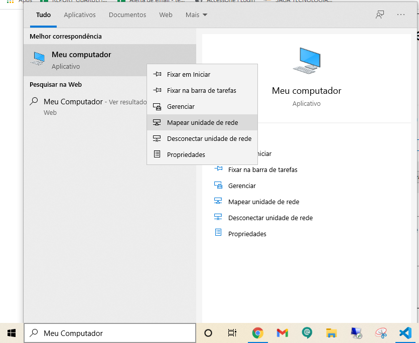
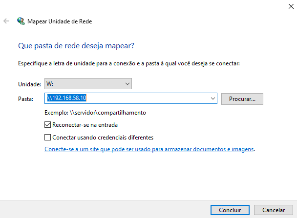
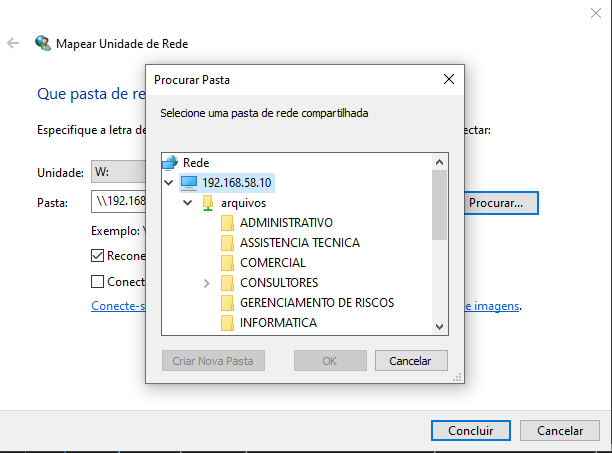

1. Escreva Meu Computador na barra de pesquisa do Windows, clique com o botão direito em cima de Meu Computador e após clique em "Mapear Unidade de Rede"
2. Digite \\192.168.58.10 e clique no botão Procurar
3. Expanda a pasta Arquivos e então escolha a pasta referente ao departamento do colaborador
